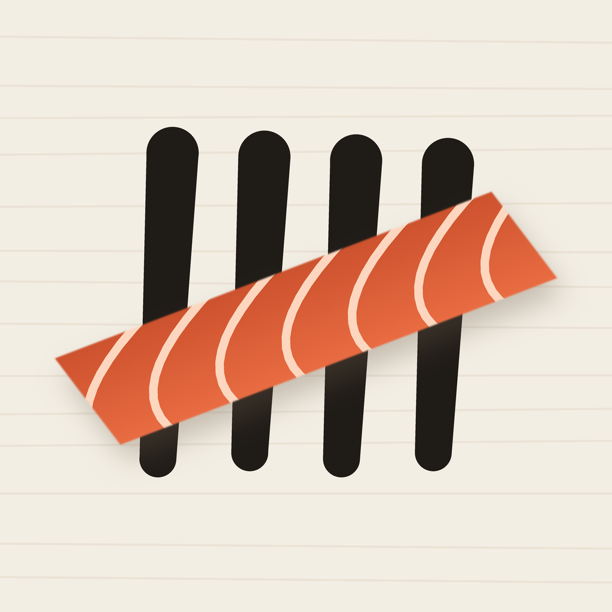

스시 나이트 · 무한리필 · 회전초밥
개인정보 처리방침
스시 나이트는 기기에서 완전히 오프라인으로 동작합니다. 계정, 광고, 추적 SDK가 없습니다.
요약
| 수집하는 데이터 | 없음 |
| 계정 및 로그인 | 불필요 |
| 광고 및 외부 SDK | 없음 |
| 저장 위치 | 기기 내부 전용 저장소 |
| 데이터 삭제 | 설정 > 지난 식사 모두 삭제 |
기기 내 저장
모든 식사 기록과 저장된 식당, 설정은 사용자의 iPhone 또는 iPad에만 저장됩니다.
권한 안내
알림은 제한 시간과 라스트 오더 로컬 알림에만 사용됩니다. 공유 시트에서 이미지 저장을 선택할 때만 저장하며 사진 보관함을 읽지 않습니다.
앱 내 구입
스시 나이트 Pro는 Apple StoreKit 2로 처리되는 1회성 비소모성 구입입니다.
지원 및 문의
스시 나이트 문의: hayriodabas@gmail.com